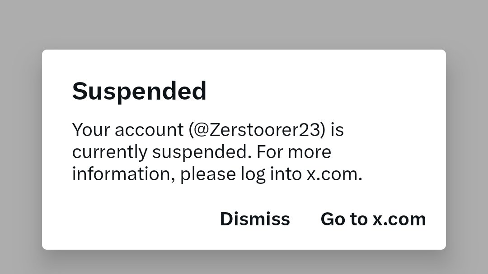
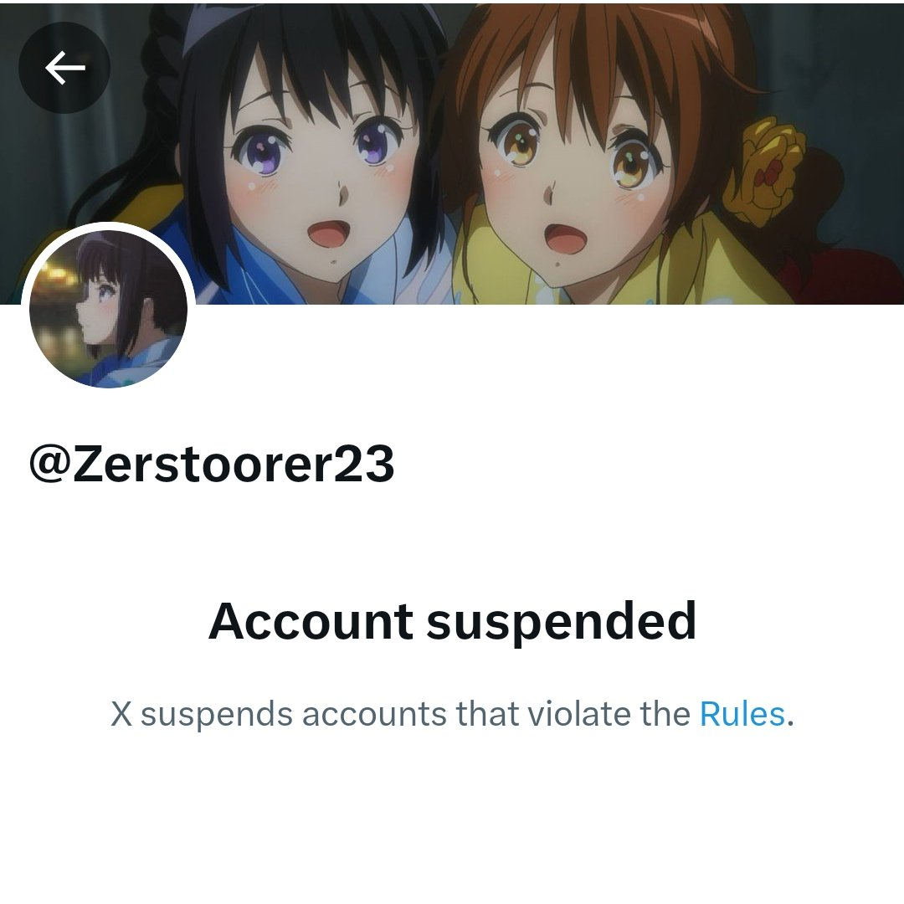
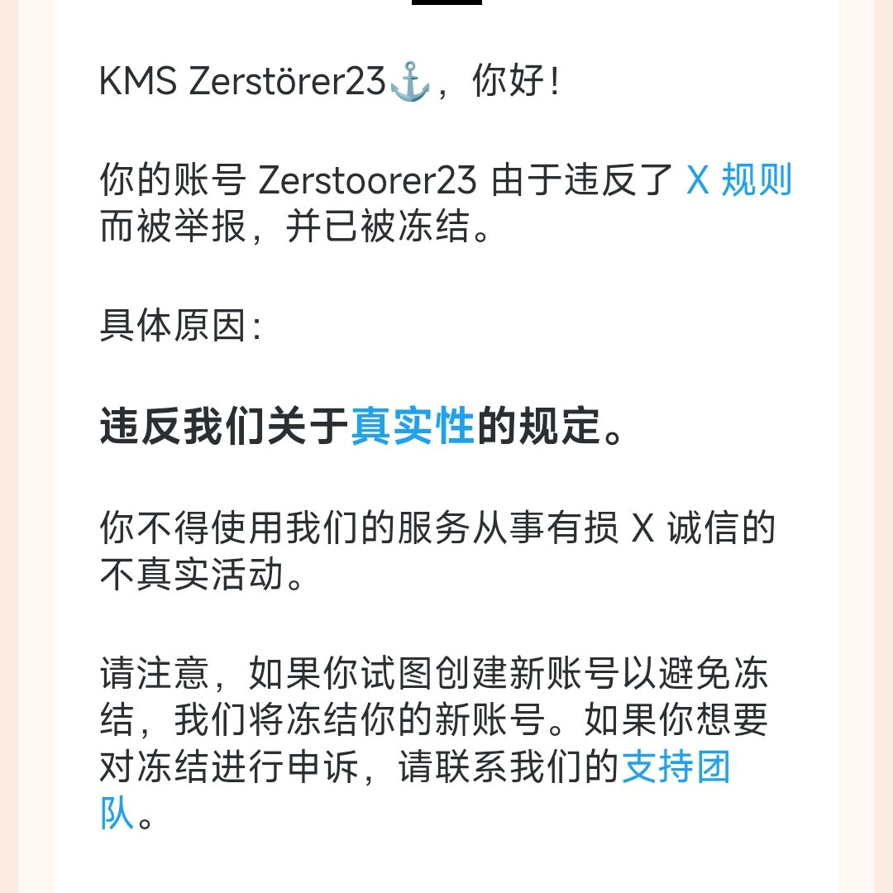

AspiLin
@AspiLin0
RT @Zerstoorer23__: 这里是@Zerstoorer23 的新账号
出于一个荒唐的理由，我的账号于昨日突然被X冻结
我对此感到很震惊，但我也没办法，只得尽可能去申诉，虽然明知希望渺茫
不过令人欣慰的是我重新注册了一个新账号，我将在这里开启二周目
烦请转发…



KMS Zerstörer23
@Zerstoorer23__
这里是@Zerstoorer23 的新账号
出于一个荒唐的理由，我的账号于昨日突然被X冻结
我对此感到很震惊，但我也没办法，只得尽可能去申诉，虽然明知希望渺茫
不过令人欣慰的是我重新注册了一个新账号，我将在这里开启二周目
烦请转发此贴文，助我寻回昔日推友！
（内阁：@KantaiYukikaze）
#推友寻回 https://t.co/a4SACwCpVS